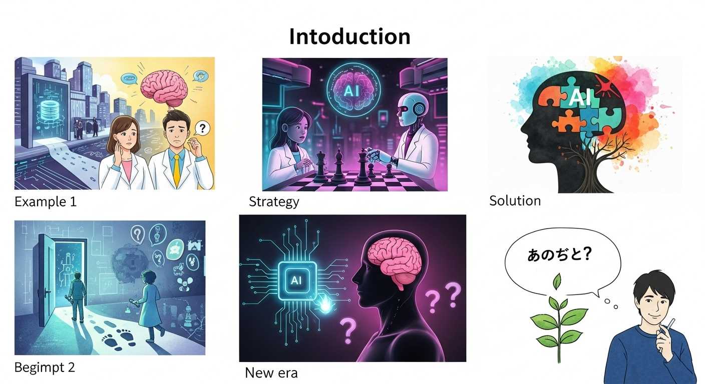
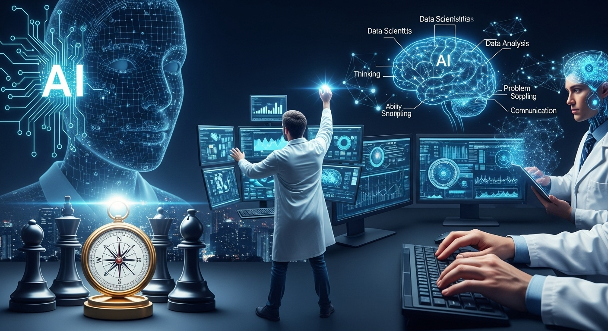
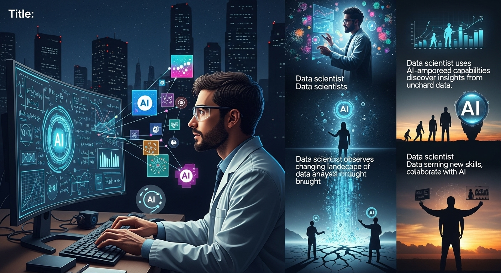
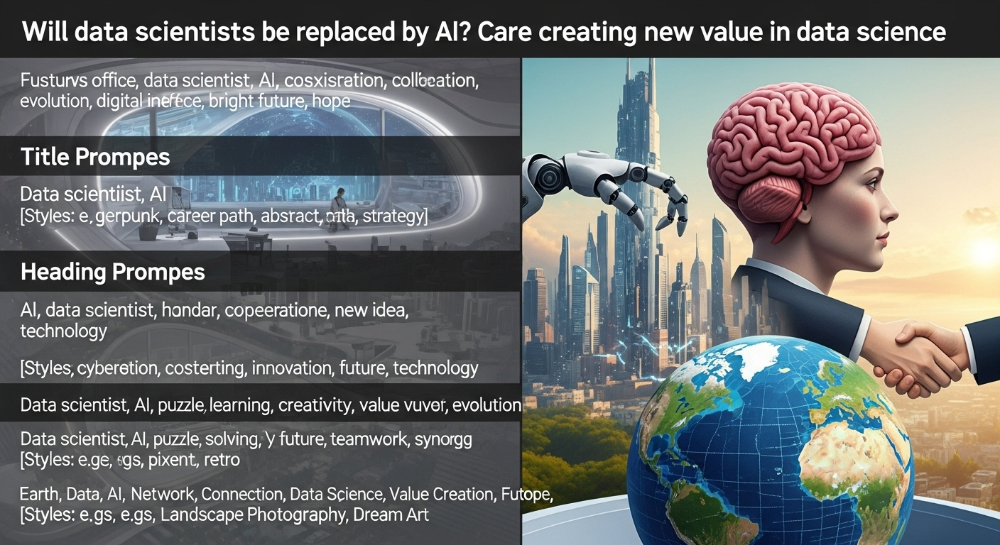

データサイエンティストはAIに代替される？未来を切り拓くキャリア戦略

導入

近年の人工知知能（AI）技術の発展は、目を見張るものがあります。特に、文章や画像を生成する「生成AI」の登場は、私たちの仕事や生活に大きなインパクトを与え、多くの人々の関心を集めています。ビジネスの世界では、AIを活用した業務効率化や新たなサービス創出が急速に進んでおり、その変化の波は、データサイエンティストという専門職も無縁ではありません。
データを分析し、ビジネスに価値ある知見をもたらすデータサイエンティスト。彼らの仕事は、まさにAI技術と密接に関わっています。だからこそ、こんな声を耳にする機会が増えてきたのではないでしょうか。
「AIが進化すれば、データ分析も自動でできるようになるのでは？」
「データサイエンティストの仕事は、いずれAIに奪われてしまうのだろうか？」
もしあなたがデータサイエンティストとしてキャリアを歩んでいる、あるいはこれから目指そうとしているのなら、こうした疑問や一抹の不安を抱いたことがあるかもしれません。技術の進化が自身の未来にどう影響するのか、気になるのは当然のことです。
しかし、結論から先にお伝えすると、過度に心配する必要はありません。AIの進化は、データサイエンティストの仕事を「奪う」のではなく、むしろその役割を「進化」させ、新たな可能性を切り拓く強力な追い風となるのです。
この記事では、AIがデータサイエンスの世界にどのような変化をもたらしているのかを冷静に見つめ、「AIに代替される業務」と「人間ならではの価値がさらに高まる領域」を具体的に解き明かしていきます。そして、その変化の時代を乗りこなし、未来を切り拓くために、これからのデータサイエンティストが磨くべき能力、AIを強力なパートナーとして活用する方法、そして具体的なキャリア戦略について、深く、そして優しく丁寧に解説していきます。
AIという未知の存在に対する漠然とした不安を、未来への確かな希望と具体的な行動計画に変えるために。さあ、一緒にこれからのデータサイエンティストのあり方について、じっくりと考えていきましょう。
データサイエンティストはAIに代替されるか？現状と将来性
AIが進化する中で、データサイエンティストの未来はどうなるのか。この問いに答えるためには、まず現状を正しく理解し、将来の可能性を冷静に見極める必要があります。ここでは、AIがデータサイエンスの現場にもたらしている変化、そしてそれでもなおデータサイエンティストがAIに完全に代替されない理由、さらには市場における需要の動向について詳しく見ていきましょう。
AI進化がデータサイエンスにもたらす変化
AI技術、特に機械学習の分野における進化は、データサイエンティストの日常業務に着実な変化をもたらしています。これまで多くの時間と専門知識を要した作業が、AIツールによって効率化・自動化されつつあるのです。
代表的な変化の一つが、「AutoML（Automated Machine Learning：自動化された機械学習）」の台頭です。AutoMLは、データの前処理からモデルの選択、ハイパーパラメータのチューニング、モデルの評価といった一連のプロセスを自動で行ってくれるツールです。かつてはデータサイエンティストが経験と勘を頼りに試行錯誤を重ねていた部分を、AIが網羅的に探索してくれるため、モデル構築にかかる時間を大幅に短縮できるようになりました。
また、データ分析の初期段階である「データ前処理」においても、AIの支援が目立ちます。欠損値の補完や外れ値の検出、さらには新しい特徴量を自動で生成する「AutoFE（Automated Feature Engineering）」といった技術も登場し、分析の準備段階における手間を軽減してくれています。
そして近年、大きな注目を集めているのが「生成AI」の活用です。ChatGPTに代表される大規模言語モデル（LLM）は、データ分析のためのPythonコードを自動で生成したり、分析結果のサマリーやレポートの草案を作成したり、さらには複雑な分析結果を平易な言葉で解説させたりと、多岐にわたるタスクでデータサイエンティストをサポートします。これにより、コーディングの時間を節約できるだけでなく、分析のアイデアを得たり、報告書作成の負担を軽くしたりすることも可能になりました。
これらの変化は、一見するとデータサイエンティストの仕事を奪う「脅威」のように感じられるかもしれません。しかし、見方を変えれば、これは面倒で時間のかかる定型的な作業から解放され、より創造的で本質的な業務に集中できる「機会」と捉えることができるのです。AIは、データサイエンティストの能力を拡張する、強力なアシスタントになってくれる存在だと言えるでしょう。
結論：AIに完全に代替されない理由
AIがデータサイエンス業務の一部を自動化することは事実ですが、データサイエンティストという職務が「完全に代替されることはない」というのが、現在の専門家たちの一致した見解です。なぜなら、データサイエンスの仕事には、AIには到底真似のできない、人間ならではの高度な思考とスキルが不可欠だからです。
第一に、「ビジネス課題の理解と定義」の能力です。データ分析プロジェクトは、そもそも「何を解決したいのか」という問いを立てることから始まります。この問いは、ビジネスの現場にある漠然とした問題意識や、言語化されていないニーズの中から見つけ出す必要があります。AIは与えられたデータを処理することは得意ですが、ビジネスの複雑な背景や組織の文化、ステークホルダー間の力学といった「文脈（コンテクスト）」を深く理解し、本質的な課題は何かを定義することはできません。これは、経験と洞察力を持った人間にしかできない、極めて創造的な仕事です。
第二に、「創造性と仮説構築」の力です。優れたデータサイエンティストは、データを見る前に「おそらくこういう関係があるのではないか」「このデータを分析すれば、こんなことが分かるかもしれない」といった仮説を立てます。この仮説構築能力は、その人の持つドメイン知識や経験、そして直感やひらめきに大きく依存します。AIはデータの中にある既存のパターンを見つけ出すことは得意ですが、まだ誰も気づいていない新しい視点から、独創的な仮説をゼロから生み出すことは困難です。
第三に、「コミュニケーションと意思決定支援」の役割です。分析結果は、それだけではただの数字やグラフの羅列に過ぎません。その結果がビジネスにとって何を意味するのかを解釈し、専門家でない人にも分かりやすく伝え、納得してもらい、具体的なアクションへと繋げていく。この一連のプロセスには、高度なコミュニケーション能力やストーリーテリングの技術、そして交渉力や調整力といった対人スキルが求められます。AIがレポートの草案を作ることはできても、会議の場で経営陣の心を動かし、プロジェクトの合意形成を図ることはできません。
そして最後に、「倫理的判断と説明責任」です。AIの分析結果が、時に意図せず特定の人々に不利益をもたらしたり、社会的な偏見を助長したりする可能性があります。データサイエンティストには、そうした倫理的なリスクを予見し、公平性や透明性を担保する責任があります。また、AIが導き出した結論について、「なぜそうなったのか」をステークホルダーに説明する責任（説明可能性、XAI）も重要です。こうした倫理観に基づく判断や、社会に対する責任は、プログラムには委ねられない、人間の重要な役割なのです。
このように、AIが進化すればするほど、むしろこうした人間ならではのソフトスキルや高度な思考能力の価値が相対的に高まっていくと言えるでしょう。
データサイエンティストの需要は増加傾向にある
「AIに仕事が奪われるのでは？」という懸念とは裏腹に、データサイエンティストの需要は世界的に見ても増加傾向にあります。その背景には、いくつかの大きな社会・経済的トレンドが存在します。
最大の要因は、あらゆる業界で進む「DX（デジタルトランスフォーメーション）」の加速です。企業が競争力を維持・強化するためには、経験や勘だけに頼るのではなく、データに基づいた客観的な意思決定（データドリブン経営）を行うことが不可欠になっています。顧客データ、販売データ、生産データ、ウェブサイトのアクセスログなど、企業内外に存在する膨大なデータをビジネス価値に転換できる専門家として、データサイエンティストへの期待は高まる一方です。
また、皮肉なことに、「AI導入の拡大」そのものがデータサイエンティストの需要を押し上げています。多くの企業がAIの導入に関心を持っていますが、AIを自社のビジネスにどう活用すればよいのか、どのようなデータが必要で、どうやってモデルを構築・運用すればよいのか、そして導入したAIの性能をどう評価すればよいのか、といった課題に直面しています。AIを正しく、かつ効果的に導入・運用するためには、ビジネスと技術の両方を理解するデータサイエンティストの存在が欠かせないのです。
実際に、経済産業省が発表する「IT人材需給に関する調査」など、多くの公的なレポートや民間の調査会社のデータが、先端IT人材、特にデータサイエンスやAI分野の専門家の不足が今後さらに深刻化することを示唆しています。求人市場を見ても、データサイエンティストのポジションは依然として高い給与水準で多くの企業から募集されており、売り手市場が続いています。
もちろん、求められるスキルセットは時代と共に変化していきます。単純なモデル構築ができるだけでなく、前述したようなビジネス課題設定能力や、最新のAI技術を使いこなす能力がより重視されるようになるでしょう。しかし、データという資源から価値を生み出す専門家としてのデータサイエンティストの重要性は、今後ますます増していくことは間違いありません。将来性は非常に明るいと言えるでしょう。
AIに代替されるデータサイエンス業務と人間的価値が光る領域
AIの進化は、データサイエンティストの仕事内容を大きく二つに分けることになります。一つは、AIが得意とし、今後ますます自動化・効率化が進むであろう業務。もう一つは、AIには難しく、人間ならではの知性や感性が輝く、より付加価値の高いコア業務です。この二つを明確に区別し、自身の時間とエネルギーを後者に集中させることが、これからのキャリアを築く上で極めて重要になります。
AIが自動化・効率化するデータサイエンス業務
まず、AIによって大きく姿を変える、あるいは人間の手を離れていく可能性のある業務について見ていきましょう。これらは主に、定型的でルール化しやすく、膨大な計算や試行錯誤が求められるタスクです。
- データクレンジングの定型作業
データ分析の前段階として欠かせないデータクレンジングですが、その中には多くの定型作業が含まれます。例えば、欠損している値を平均値や中央値で埋める、明らかに異常な値（外れ値）を特定して除去する、データの表記揺れ（例：「株式会社」と「(株)」）を統一するといった作業です。これらの処理は、ルールが明確であり、AIツールが自動で検出し、修正案を提示したり、実行したりすることが得意な領域です。 - 基本的な特徴量エンジニアリング
機械学習モデルの精度を高めるために、元のデータから新しい特徴量を作り出す特徴量エンジニアリングは重要な工程です。しかし、既存の変数同士の四則演算（例：単価 × 数量 = 売上）や、日付データからの曜日や月の抽出といった基本的な特徴量生成は、AutoMLツールなどが自動で行ってくれるようになっています。 - モデル選択とハイパーパラメータチューニング
これはAutoMLが最も得意とする領域です。ある課題に対して、ロジスティック回帰、決定木、ニューラルネットワークなど、無数にあるアルゴリズムの中からどれを選ぶか。そして、選んだモデルの性能を最大化するために、学習率や隠れ層の数といったハイパーパラメータをどう設定するか。これらは、人間が一つひとつ試すには膨大な時間がかかりますが、AIは高速な計算能力を活かして、最適な組み合わせを自動で探索してくれます。 - レポート作成の初期段階
分析結果をまとめるレポート作成も、AIの支援が期待できる業務です。データの基本的な統計量（平均、標準偏差など）を算出して表にまとめたり、主要な変数間の関係性を可視化する散布図や棒グラフを自動で生成したりすることは、生成AIにとって容易なタスクです。データサイエンティストは、AIが作成したレポートの草案を基に、より深い洞察や考察を加えていくという形に変わっていくでしょう。 - 簡単な分析コードの生成
「このCSVファイルを読み込んで、特定の条件でデータを抽出し、グラフを描画する」といった、比較的単純な処理のPythonコードであれば、生成AIに依頼するだけで瞬時に生成できます。これにより、データサイエンティストは細かな文法を思い出す手間から解放され、より分析のロジックそのものに集中できるようになります。
これらの業務がAIに任せられるようになることで、データサイエンティストは退屈な反復作業から解放され、本来注力すべき、より創造的で戦略的な仕事に時間を使うことができるようになるのです。
人間ならではの価値が光るコア業務とは
AIによる自動化が進む一方で、人間でなければ担えない、より本質的で付加価値の高い業務の重要性が増していきます。これらが、これからのデータサイエンティストの「コア業務」となり、市場価値を決定づける領域です。
- 課題設定（Problem Formulation）
これが最も重要かつ創造的な業務です。「売上が伸び悩んでいる」という漠然としたビジネス上の悩みに対し、「どの顧客セグメントのリピート率が低下しているのかを特定する」「新規顧客獲得のためのマーケティング施策の効果を測定する」といった、データ分析によって解決可能な具体的な「問い」に落とし込む力です。これには、ビジネスの現場を深く理解し、関係者と対話し、問題の本質を見抜く洞察力が不可欠です。AIは答えを出すことはできても、何を問うべきかを自ら考えることはできません。 - 仮説設計（Hypothesis Design）
優れた分析は、優れた仮説から生まれます。課題が設定された後、「おそらく、若年層の顧客はSNS経由での購入が多く、セール情報への反応が良いのではないか」「製品Aの不具合報告は、特定の製造ラインと相関があるのではないか」といった、データで検証すべき仮説を立てる能力です。この仮説は、業界知識や過去の経験、ビジネスの文脈理解といった、AIが持ち得ない人間の知見の総動員によって生まれます。この仮説の質が、最終的な分析アウトプットの価値を大きく左右します。 - 結果の解釈とストーリーテリング（Interpretation & Storytelling）
分析から得られた「相関係数が0.8だった」「決定係数が0.9だった」という単なる事実を、ビジネスの言葉に翻訳し、意味のある物語として伝える力です。「分析の結果、SNS広告への投資を10%増やすことで、若年層の売上が15%向上する可能性が示唆されました。これは、競合他社がまだ注力していない新たな成長エンジンとなり得ます」といったように、データに基づいたインサイトを、聞き手の心に響くストーリーとして構成し、具体的な行動変容を促す。この能力は、論理的思考力と共感力、そして表現力を兼ね備えた人間にしか発揮できません。 - 倫理的・社会的配慮（Ethical Considerations）
AIモデルが、特定の属性（性別、人種、年齢など）を持つ人々に対して不公平な判断を下していないか。顧客のプライバシーは適切に保護されているか。分析結果が社会に与える影響はどのようなものか。こうした倫理的な問いに真摯に向き合い、責任あるデータ活用を推進する役割は、今後ますます重要になります。技術的な正しさだけでなく、社会的な正しさを追求する姿勢は、人間ならではの価値観と倫理観に基づいています。 - ステークホルダーとの協働（Stakeholder Collaboration）
データサイエンスプロジェクトは、一人で完結するものではありません。経営層、事業部門の担当者、IT部門のエンジニア、法務担当者など、様々な立場の人々と円滑にコミュニケーションを取り、協力しながらプロジェクトを前に進めていく必要があります。それぞれの関心事や懸念を理解し、専門用語をかみ砕いて説明し、時には利害の対立を調整する。こうした高度なファシリテーション能力や人間関係構築力は、AIが代替できるものではありません。
これからのデータサイエンティストは、AIを賢く活用して効率化できる部分は徹底的に任せ、自らはこれらの人間的な価値が光るコア業務に集中することで、替えの効かない存在として輝き続けることができるのです。
AI時代にデータサイエンティストが磨くべき能力

AIがデータサイエンティストの強力なパートナーとなる時代において、私たちはどのような能力を意識的に伸ばしていくべきでしょうか。もはや、単に高度な分析モデルを構築できるだけでは十分ではありません。技術を土台としながらも、よりビジネスの上流工程や、人と人との間をつなぐ役割で価値を発揮できる能力が、これまで以上に求められます。ここでは、特に重要となる3つの能力について深掘りしていきます。
能力１．ビジネス課題を特定し「問いを立てる力」
AI時代にデータサイエンティストが持つべき最も重要な能力は、間違いなくこの「問いを立てる力」です。なぜなら、どれほど高性能なAIであっても、それはあくまで「与えられた問いに、データに基づいて最適な答えを出す」ツールに過ぎないからです。そもそも問いが的外れであれば、AIが導き出す答えも全く価値のないものになってしまいます。
例えば、あるECサイトの担当者が「最近、売上が落ちている。原因を分析してほしい」とデータサイエンティストに依頼したとします。この漠然とした依頼に対して、経験の浅いデータサイエンティストは、すぐに全体の売上データを時系列で分析し、「〇月頃から売上が減少傾向にあります」という事実を報告するだけかもしれません。しかし、これではビジネスの改善にはつながりません。
一方で、「問いを立てる力」を持つデータサイエンティストは、まず担当者へのヒアリングを深めます。「売上が落ちているというのは、具体的にどの商品カテゴリですか？」「新規顧客とリピート顧客、どちらの売上が落ちていますか？」「最近、競合他社の動きや、サイトの仕様変更など、何か変化はありましたか？」といった質問を投げかけ、問題の解像度を上げていきます。
その上で、以下のような、より具体的でアクションにつながる「良い問い」を自ら設定するのです。
- 「過去3ヶ月で離脱した優良顧客（購入金額上位10%）は、どのような特徴を持ち、離脱直前にどのような行動を取っていたのか？」
- 「特定のプロモーション（例：送料無料キャンペーン）は、新規顧客の獲得には貢献しているが、顧客単価の低下を招いていないか？」
- 「競合サイトAが新しいサービスを開始した時期と、我々のサイトの特定の商品のコンバージョン率低下には、時間的な相関関係があるか？」
こうした「良い問い」を立てることができれば、その後のデータ分析の方向性は自ずと定まり、導き出されるインサイトも具体的で、ビジネスインパクトの大きなものになります。
この能力を磨くためには、以下の三つの習慣が助けになります。
- ビジネスドメインへの深い理解：自分が関わる業界のビジネスモデル、市場環境、顧客の特性、業務フローなどを徹底的に学びましょう。業界ニュースを追ったり、現場の社員と積極的に交流したりすることが重要です。
- 常に「なぜ？」を繰り返す：表面的な事象に満足せず、「なぜそうなっているのか？」を最低5回は繰り返す「なぜなぜ分析」のような思考習慣を身につけましょう。問題の根本原因にたどり着く訓練になります。
- 多様な視点を取り入れる：自分の専門分野だけでなく、マーケティング、営業、財務、デザインシンキングといった、異なる分野の知識やフレームワークを学ぶことで、課題を多角的に捉える力が養われます。
AIが答えを出す役割を担うからこそ、人間は「何を問うべきか」という、より上流で創造的な役割を担うべきなのです。
能力２．AIを使いこなす技術的スキルと実践力
AIに代替されない人間的なスキルが重要である一方で、そのAIを「使いこなす」ための技術的なスキルが不要になるわけでは、決してありません。むしろ、AIを単なる便利なツールとして表面的に使うのではなく、その仕組みや特性を深く理解し、その能力を最大限に引き出すための専門知識の重要性は増しています。AIをブラックボックスとして恐れたり、妄信したりするのではなく、意のままに操る「主（あるじ）」となるためのスキルが必要です。
具体的には、以下のような技術的スキルと実践力が求められます。
- 機械学習・深層学習の基礎理論の理解：AutoMLが自動でモデルを選んでくれるとしても、なぜそのモデルが選ばれたのか、そのモデルにはどのような長所と短所があるのかを理解していなければ、結果を正しく評価し、ビジネスの文脈で説明することはできません。回帰、分類、クラスタリングといった基本的なアルゴリズムから、ニューラルネットワークの仕組みまで、その裏側にある理論をしっかりと学んでおくことが、応用力の土台となります。
- 最新AI技術トレンドのキャッチアップと応用力：LLM（大規模言語モデル）や生成AI、あるいは強化学習や因果推論といった技術は、日進月歩で進化しています。これらの新しい技術がどのようなもので、自分のビジネス課題にどう応用できるのかを常に考え、情報収集を怠らない姿勢が重要です。例えば、「LLMを使って、顧客からの問い合わせ内容を自動で要約・分類し、対応の優先順位付けができないか」といった発想ができるかどうかは、技術への理解度にかかっています。
- MLOps（機械学習基盤）の知識：データサイエンティストの仕事は、分析モデルを作って終わりではありません。そのモデルを実際のサービスに組み込み、安定的に運用し、性能を監視し、継続的に改善していくための知識、すなわちMLOpsのスキルが不可欠です。モデルのバージョン管理、自動的な再学習の仕組み、パフォーマンスモニタリングなど、開発から運用までの一連のライフサイクルを管理する能力が、ビジネス価値を持続させる上で重要になります。
- AIツールの選定・評価能力：世の中には無数のAI関連ツールやサービスが存在します。自社の課題やデータ、予算、チームのスキルセットなどを総合的に考慮し、数ある選択肢の中から最適なツールを選び出す能力が求められます。また、導入したツールの性能を客観的に評価し、投資対効果を説明する能力も同様に重要です。
これらの技術的スキルは、AIを単に使役するだけでなく、AIと「対話」し、共創するための共通言語となります。技術の深い理解があってこそ、AIの能力を真に引き出し、ビジネス上の課題解決へとつなげることができるのです。
能力３．データに基づき課題解決へ導くコミュニケーション能力
どれほど優れた分析を行い、画期的なインサイトを発見したとしても、それが関係者に伝わり、理解され、行動に移されなければ、ビジネス上の価値はゼロに等しいと言えます。分析結果を「宝の持ち腐れ」にしないために、データサイエンティストには、分析能力と同じくらい、あるいはそれ以上に高度なコミュニケーション能力が求められます。
ここで言うコミュニケーション能力とは、単に「話がうまい」ということではありません。データという客観的な事実（ファクト）を基盤にしながら、相手を動かし、組織全体の課題解決を推進していくための、戦略的なコミュニケーションを指します。
その中核をなすのが、「データストーリーテリング」の技術です。これは、分析結果を単なる数字やグラフの羅列として報告するのではなく、聞き手の感情や関心に訴えかける、一つの魅力的な「物語」として構成し、伝える技術です。
- 背景（Context）：まず、この分析がどのようなビジネス課題から始まったのか、その背景を共有し、聞き手を物語の世界に引き込みます。
- 発見（Finding）：次に、データ分析から明らかになった、最も重要で驚きのある発見（インサイト）を提示します。ここでは、効果的なデータ可視化（ビジュアライゼーション）が強力な武器となります。複雑なデータも、直感的で分かりやすいグラフにすることで、一目で状況を理解させることができます。
- 意味合い（Implication）：その発見が、ビジネスにとって具体的にどのような意味を持つのか、どのような機会やリスクを示唆しているのかを解釈し、説明します。
- 提案（Recommendation）：そして最後に、そのインサイトに基づいて、次に取るべき具体的なアクションを明確に提案します。「〇〇という施策を実行すべきです」「〇〇の予算を増やすことを推奨します」といった、聞き手が「何をすればよいのか」を迷わないような、力強い呼びかけで締めくくります。
また、プレゼンテーションの場だけでなく、日々の業務におけるファシリテーション能力も重要です。事業部門の担当者やエンジニアが集まる会議で、それぞれの意見や懸念を引き出しながら、データに基づいた議論を促し、全員が納得できる結論へと導いていく。こうした合意形成のプロセスを主導する役割も、これからのデータサイエンティストには期待されます。
この能力を磨くためには、専門用語をできるだけ使わず、相手の知識レベルに合わせて平易な言葉で説明する練習を日頃から心がけることが大切です。また、自分の分析結果を様々な部署の人に聞いてもらい、フィードバックを求めることで、どこが伝わりにくかったのか、どうすればもっと分かりやすくなるのかを学ぶことができます。AIが事実を提示することはできても、人の心を動かし、組織を動かすのは、熱意と論理を兼ね備えた人間の言葉だけなのです。
データサイエンス業務でAIを強力なツールとして活用する方法
AIを「仕事を奪う脅威」ではなく、「能力を拡張してくれるパートナー」と捉えるならば、私たちはその活用方法を積極的に学んでいく必要があります。データサイエンスのワークフロー全体を見渡したとき、AIは様々な場面で私たちの仕事を助け、より高度なレベルへと引き上げてくれます。ここでは、具体的な業務プロセスに沿って、AIを強力なツールとして活用するための方法を見ていきましょう。
方法１．データ収集・前処理の効率化とAI活用
データサイエンスプロジェクトにおいて、全作業時間のうち6～8割が費やされると言われるのが、データの収集と前処理の工程です。この最も時間のかかる部分をAIで効率化できれば、その効果は絶大です。生まれた時間を、より本質的な課題設定や分析設計に振り向けることができます。
- データラングリングツールの活用
近年、GUI（グラフィカル・ユーザー・インターフェース）ベースで直感的にデータクレンジングや加工ができる「データラングリングツール」が進化しています。これらのツールの多くはAIを内蔵しており、例えば、データセットを読み込むだけで、AIが自動でデータ型を推測したり、欠損値や外れ値の候補をハイライトしてくれたり、さらには「この列は分割した方が良いのでは？」といった変換処理を提案してくれたりします。プログラミングコードを書くことなく、クリック操作だけで複雑なデータ前処理を進められるため、作業時間を大幅に短縮できます。 - 生成AIによるコード生成とデバッグ支援
より複雑で独自のデータ処理が必要な場合でも、生成AIは強力な味方になります。「二つの異なるデータフレームを、特定のキーで結合し、新しい列を追加するPythonコードを書いて」といったように、自然言語で指示するだけで、必要なコードを瞬時に生成してくれます。また、自分で書いたコードがエラーになった際に、エラーメッセージをそのまま生成AIに貼り付けて「このエラーの原因と解決策を教えて」と尋ねれば、的確なアドバイスを得ることもできます。これにより、コーディングとデバッグのサイクルを高速化できます。 - AIによるデータラベリング支援
画像認識や自然言語処理の分野で機械学習モデルを訓練する際には、大量の「教師データ」が必要になります。例えば、猫の画像をAIに認識させるためには、「これは猫です」というラベルが付いた画像を何千、何万枚も用意しなければなりません。この骨の折れるラベリング作業を、AIが支援してくれます。最初に人間が少数のデータにラベルを付けると、AIがそのパターンを学習し、残りのデータに対して自動でラベルを予測・付与します。人間は、AIが付けたラベルが正しいかを確認・修正するだけで済むため、作業効率が飛躍的に向上します。
これらのAI活用により、データサイエンティストは、面倒な「データの下ごしらえ」から解放され、創造的な「料理（分析）」そのものに集中する時間を確保できるのです。
方法２．モデル構築・評価の高速化と精度向上
データの前処理が終わると、次はいよいよ機械学習モデルの構築と評価のフェーズに入ります。この工程は、データサイエンティストの専門性が最も発揮される部分の一つですが、同時に多くの試行錯誤と計算時間を要する部分でもあります。ここでもAI、特にAutoMLの活用が大きな力を発揮します。
- AutoMLによる網羅的なモデル探索
ある予測課題に対して、どの機械学習アルゴリズムが最適かは、実際に試してみるまで分かりません。AutoMLツールは、ロジスティック回帰、サポートベクターマシン、勾配ブースティング、ニューラルネットワークなど、数十種類ものモデルを自動で学習させ、それぞれの性能を比較評価してくれます。これにより、データサイエンティストは、手作業で一つひとつモデルを試すという時間のかかるプロセスを省略し、最初から精度の高いモデルの候補群を得ることができます。 - ハイパーパラメータの自動最適化
機械学習モデルの性能は、「ハイパーパラメータ」と呼ばれる様々な設定値によって大きく左右されます。これらの最適な組み合わせを見つけ出す作業は、熟練のデータサイエンティストにとっても難しい課題です。AutoMLは、ベイズ最適化などの高度な探索アルゴリズムを用いて、このハイパーパラメータの広大な探索空間から、最も性能が高くなる組み合わせを効率的に見つけ出してくれます。
ただし、ここで重要なのは、AutoMLを「魔法の杖」のように妄信しないことです。AutoMLが出した結果を鵜呑みにするのではなく、それを「出発点」として捉える姿勢が大切です。
- 結果の解釈：なぜAutoMLはこのモデルを選んだのか？どの特徴量が予測に大きく寄与しているのか（特徴量重要度）？といった結果の背景を深く分析し、それがビジネスの文脈と照らし合わせて妥当なものかを吟味する必要があります。
- カスタマイズ：AutoMLが提案したモデルをベースに、さらにドメイン知識を活かして特徴量を追加したり、ビジネス上の制約（例：モデルの解釈しやすさが重要）を考慮して、あえてよりシンプルなモデルに修正したりといった、人間による調整が最終的な価値を高めます。
データサイエンティストの役割は、AutoMLと競争することではありません。AutoMLを賢く使いこなし、その結果を批判的に吟味し、ビジネス価値へと昇華させる「賢いユーザー」あるいは「指揮者」になることなのです。
方法３．分析結果の解釈とビジネス適用への応用
分析が完了し、モデルが構築された後、その結果をどう解釈し、ビジネスの現場でどのように活用していくかを考えるフェーズは、データサイエンティストの価値が最も問われる場面です。この創造的な思考プロセスにおいても、生成AIは優れた「壁打ち相手」や「アイデア創出のパートナー」となってくれます。
- 分析レポートの自動生成と要約
複雑な分析結果や統計指標のリストを生成AIに入力し、「この分析結果を、専門家でないビジネス部門のマネージャー向けに、分かりやすく要約して。重要なポイントを3つに絞って箇条書きにして」と依頼することができます。AIが生成した草案を叩き台にすることで、報告書作成の時間を大幅に削減できます。人間は、その草案にビジネスの文脈や戦略的な示唆を加え、より説得力のある内容に仕上げることに集中できます。 - 自然言語による対話的なデータ探索
最新のBI（ビジネスインテリジェンス）ツールの中には、生成AIが組み込まれ、自然言語でデータに質問できるものが登場しています。例えば、SQLやPythonのコードを書かなくても、チャット画面に「先月の地域別売上トップ5を棒グラフで表示して」と入力するだけで、AIがその意図を汲み取ってデータを抽出し、自動で可視化してくれます。これにより、データサイエンティストだけでなく、ビジネスユーザー自身も、気軽にデータを探索し、インサイトを得るきっかけを掴むことができます。データサイエンティストは、こうしたツールを現場に導入し、データ活用の民主化を推進する役割も担うようになります。 - シミュレーションと施策立案の支援
分析結果を基に、次のアクションを考える際にもAIは役立ちます。例えば、顧客の離反予測モデルを構築した後、「もし、離反確率が高い顧客に対して、10%割引クーポンを送付する施策を行った場合、売上と利益はどのように変化するか？」といった「what-if」シナリオのシミュレーションをAIに依頼することができます。複数の施策案のインパクトを事前に予測・比較することで、よりデータに基づいた効果的な意思決定を支援できます。
このように、AIを思考のパートナーとして活用することで、データサイエンティストは分析結果を出すだけでなく、その先のビジネスアクションにまで踏み込んだ、より価値の高い貢献ができるようになるのです。
AI活用でデータサイエンティストが得られるメリット
AIを日々の業務に積極的に取り入れることは、単に作業が楽になるというだけではありません。それは、データサイエンティスト自身の生産性を高め、仕事の質を向上させ、さらにはキャリアの可能性を大きく広げることにつながります。AIとの共存は、私たちに多くの素晴らしいメリットをもたらしてくれるのです。
メリット１．業務効率向上と生産性アップを実現
これが最も直接的で分かりやすいメリットでしょう。これまで述べてきたように、AIはデータサイエンスのワークフローにおける多くの定型的、反復的な作業を自動化・高速化してくれます。
- 時間のかかる作業からの解放：データの前処理、モデルの試行錯誤、レポートの雛形作成といった、これまで多くの時間を費やしてきた作業をAIに任せることで、データサイエンティストは大幅な時間的余裕を得ることができます。
- 試行錯誤サイクルの高速化：特にモデル開発において、AutoMLを使えば、人間が数日かけて行っていたような多数のモデルの比較検討を、数時間で完了させることも可能です。これにより、分析のイテレーション（繰り返し）を高速に回し、より短期間で精度の高いモデルにたどり着くことができます。
- アウトプットの質の向上：AIが生成したコードやレポートの草案をベースに作業することで、ケアレスミスを減らし、より洗練されたアウトプットを生み出すことができます。また、AIは人間が見落としがちなデータのパターンを発見してくれることもあり、分析の質そのものを向上させる可能性も秘めています。
結果として、一人のデータサイエンティストが、これまでと同じ時間で、より多くのプロジェクトを手掛けたり、一つひとつのプロジェクトにより深く時間をかけて取り組んだりすることが可能になります。これは、個人の生産性向上だけでなく、組織全体のデータ活用能力の向上にも直結します。また、長時間労働の是正やワークライフバランスの改善といった、働き方そのものにも良い影響を与えることが期待できるでしょう。
メリット２．より高度な分析や戦略立案への集中
AIによって生み出された時間と知的リソースを、私たちはどこに投資すべきでしょうか。その答えは、AIにはできない、人間ならではの付加価値が高い業務に集中することです。AI活用は、データサイエンティストの役割を「作業者」から、より高度な「思考者」へとシフトさせることを可能にします。
- ビジネス課題の深掘り：これまで時間がなくて十分にできなかった、ビジネスの現場へのヒアリングや、業界動向のリサーチに時間を割くことができます。これにより、より本質的でインパクトの大きい分析テーマを設定できるようになります。
- 新しい分析手法の研究・導入：因果推論や強化学習、グラフニューラルネットワークといった、より高度で新しい分析手法を学び、自社の課題に応用できないかを検討する時間を確保できます。これにより、競合他社にはない、独自のインサイトを生み出すことが可能になります。
- 経営層や事業部門とのディスカッション：分析結果をただ報告するだけでなく、その結果が持つ戦略的な意味合いについて、経営層や事業責任者と深く議論する時間を増やすことができます。データに基づいた事業戦略の立案や、新しいビジネスモデルの提案といった、より上流の意思決定に貢献する機会が増えていくでしょう。
つまり、AIが「How（どうやって分析するか）」の部分を担ってくれるおかげで、人間は「Why（なぜそれを分析するのか）」と「So What?（だから何なのか）」という、より本質的で創造的な問いに集中できるようになるのです。これは、データサイエンティストが単なる分析の専門家から、ビジネスを動かす「戦略パートナー」や「社内コンサルタント」へと進化していくことを意味します。
メリット３．市場価値の向上とキャリアパスの拡大
変化の激しい時代において、自身の市場価値を維持・向上させていくことは、すべてのプロフェッショナルにとって重要な課題です。AIを使いこなせる能力は、これからのデータサイエンティストにとって、極めて強力な武器となり、キャリアの可能性を大きく広げてくれます。
- 希少性の高い人材になれる：現時点では、最新のAI技術を深く理解し、それをビジネスの現場で実践的に活用できるデータサイエンティストはまだ多くありません。AI、特に生成AIやMLOpsといった分野のスキルを身につけることで、他の多くのデータサイエンティストとの明確な差別化を図ることができ、市場における自身の希少価値を高めることができます。
- より魅力的なポジションへの道が開ける：AIを使いこなし、ビジネスの上流工程から貢献できるデータサイエンティストは、企業にとって非常に魅力的な存在です。データサイエンスチームのリーダーやマネージャーといった管理職への道はもちろん、AIを活用した新製品・サービスの企画を担うプロダクトマネージャー、あるいは企業のデータ戦略全体を統括するCDO（Chief Data Officer）のような経営層に近いポジションも視野に入ってきます。
- 多様なキャリアの選択肢：AIスキルは、事業会社だけでなく、AIソリューションを提供するITベンダーや、企業のDXを支援するコンサルティングファームなど、活躍の場を大きく広げてくれます。また、特定の業界（例：金融、医療）のドメイン知識とAIスキルを掛け合わせることで、その分野の第一人者として独立・起業するといったキャリアパスも考えられるでしょう。
AIの登場を、自身のスキルセットをアップデートし、キャリアを次のステージへと進める絶好の機会と捉えること。この前向きな姿勢こそが、不確実な未来を乗りこなし、自分自身の価値を高め続けるための鍵となるのです。
AI時代にデータサイエンティストが直面する課題

AIとの共存がもたらすメリットは大きい一方で、この新しい時代に適応していくためには、データサイエンティストが乗り越えるべきいくつかの課題も存在します。これらの課題から目をそらさず、正面から向き合い、対策を講じていくことが、持続的な成長のためには不可欠です。
課題１．最新技術への継続的な学習負担
AI、特に深層学習や生成AIの分野は、技術の進化スピードが驚異的に速いのが特徴です。毎日のように新しい論文が発表され、革新的なモデルやツールが登場し、昨日までの常識が今日には古くなっている、ということも珍しくありません。この急速な変化に追いつき、自身のスキルを常に最新の状態に保ち続けることは、大きな負担となり得ます。
- 情報の洪水：何を、どこから学べばよいのかが分かりにくいという問題があります。arXivに投稿される論文、トップカンファレンスの発表、著名な研究者のブログ、新しいオープンソースライブラリなど、キャッチアップすべき情報の量は膨大です。すべてを追いかけるのは物理的に不可能であり、情報の取捨選択が非常に重要になります。
- スキルの陳腐化リスク：特定のツールやフレームワークの操作に習熟しても、より優れた新しいものが登場すれば、そのスキルはあっという間に価値を失ってしまう可能性があります。表面的なツールの使い方だけでなく、その背景にある普遍的な理論やコンセプトを理解しておくことが、変化に対応する上での土台となります。
- 学習時間の確保：日々の業務に追われる中で、新しい技術を学ぶための時間をどう確保するかは、多くの人にとって悩ましい問題です。通勤時間や週末の時間を活用したり、会社によっては業務時間内での学習を奨励する制度があったりしますが、いずれにせよ、継続的な自己投資への強い意志が求められます。
この課題を乗り越えるためには、効率的な学習戦略が必要です。例えば、信頼できる情報源（特定の研究者やコミュニティなど）をいくつかフォローするのに絞る、基礎となる数学や統計学の知識を固めて応用が利くようにする、そして何よりも、学んだ知識を実際のプロジェクトで使ってみる（アウトプットする）ことで、記憶に定着させることが重要です。この学習負担は確かに大変ですが、見方を変えれば、知的好奇心を満たし続けられる、やりがいに満ちた仕事であるとも言えるでしょう。
課題２．倫理的・社会的な側面への配慮
AIが社会の様々な場面で使われるようになるにつれて、その判断がもたらす倫理的・社会的な影響への関心が高まっています。データサイエンティストは、単に技術的な正しさや予測精度の高さだけを追求するのではなく、自身が開発するAIシステムが社会に与える影響にまで責任を持つ必要があります。
- AIモデルのバイアス：AIは、学習に使われたデータに含まれる偏見を、そのまま学習し、時には増幅させてしまうことがあります。例えば、過去の採用データに男女間の偏りがあった場合、それを学習したAIは、性別に基づいて不公平な採用判断を下してしまうかもしれません。データサイエンティストには、データに潜むバイアスを検出し、それを是正するための技術的な手法（Fairness-aware Machine Learningなど）を適用することが求められます。
- 透明性と説明可能性（XAI）：特に、人の人生に大きな影響を与えるような領域（例：融資審査、医療診断）で使われるAIは、なぜそのような結論に至ったのかを人間が理解できる形で説明できる必要があります。深層学習のような複雑なモデルは「ブラックボックス」になりがちですが、SHAPやLIMEといったXAI（Explainable AI）の手法を用いて、モデルの判断根拠を可視化し、ステークホルダーに説明する責任があります。
- プライバシーの保護：顧客の個人情報など、機微なデータを取り扱う機会が多いデータサイエンティストは、プライバシー保護に関する法令（日本の個人情報保護法やEUのGDPRなど）を遵守することはもちろん、差分プライバシーや連合学習といった、プライバシーを保護しながらデータを活用するための新しい技術にも精通している必要があります。
これらの倫理的な課題には、唯一絶対の正解がない場合も多く、技術的な知識だけでなく、社会的な常識や倫理観、そして多様なステークホルダーと対話しながら合意形成を図る能力が求められます。これからのデータサイエンティストは、技術者であると同時に、社会における「責任あるAI」の担い手としての役割を意識することが不可欠です。
課題３．AIへの過度な依存によるリスクとその回避策
AIツールが非常に便利で高機能であるがゆえに、それに過度に依存してしまうことによるリスクも存在します。便利さの裏側にある落とし穴を理解し、意識的にそれを回避する努力が必要です。
- 思考停止とブラックボックス化：AutoMLツールがボタン一つで高精度なモデルを生成してくれると、その結果を無批判に受け入れてしまい、「なぜこのモデルが最適なのか」「この結果はビジネス的に本当に意味があるのか」といった深い考察を怠るようになってしまう危険性があります。AIが出した答えを鵜呑みにし、自ら考えることをやめてしまう「思考停止」は、データサイエンティストとしての成長を妨げる最大の敵です。
- 基礎的なスキルの陳腐化：生成AIに頼ってばかりいると、自分でゼロからコーディングする能力が低下したり、基本的な統計分析の手法を忘れてしまったりする可能性があります。基礎体力とも言えるこれらのスキルが衰えると、AIが出した結果がおかしい時にそれに気づけなかったり、複雑で前例のない課題に対応できなかったりするようになります。
- 誤った結論への誘導：AIは、時に「もっともらしい嘘」をつくことがあります（ハルシネーション）。また、学習データに内在するバイアスやノイズに過剰に適合（過学習）し、一見正しそうに見えても、現実の世界では全く役に立たない、誤った結論を導き出すこともあります。AIの提案を盲信すると、ビジネスに大きな損害を与えかねません。
これらのリスクを回避するためには、以下のような心構えが重要です。
- 常に批判的な視点を持つ：「このAIの出力は本当に正しいか？」「別の解釈や可能性はないか？」と常に自問自答する癖をつけましょう。AIを便利なアシスタントとみなしつつも、最終的な判断の責任は人間にあることを忘れてはいけません。
- 基礎を怠らない：定期的に、あえてツールに頼らずに基礎的な分析をゼロから手作業で行ってみる、機械学習アルゴリズムの論文を読んで数学的な背景を復習するなど、基礎体力を維持・向上させるためのトレーニングを意識的に行いましょう。
- AIを「出発点」と捉える：AIの提案を最終的な答えと考えるのではなく、あくまで思考の「出発点」や「たたき台」と位置づけましょう。そこから人間がドメイン知識やビジネスの文脈を加えて、さらに思考を深め、より質の高い結論へと昇華させていく。この「AIとの協働」のスタンスが、過度な依存を防ぐ鍵となります。
AIという強力な力を手にしたからこそ、それを使いこなす人間の側の知性、倫理観、そして主体性が、これまで以上に問われる時代になっているのです。
未来を拓くデータサイエンティストの学習戦略とキャリアパス
変化の激しいAI時代を生き抜き、データサイエンティストとして輝き続けるためには、戦略的な学習とキャリア設計が不可欠です。ここでは、未来を自らの手で切り拓くための具体的な学習戦略と、キャリアパスの考え方について見ていきましょう。
戦略１．AI関連技術の基礎知識習得と応用力
表面的なツールの使い方を覚えるだけでは、技術の進化の波にすぐに飲み込まれてしまいます。重要なのは、変化の激しい時代でも揺るがない、普遍的な基礎知識を固め、それを現実の課題に応用する力を養うことです。
- 数学的・統計的基盤の強化：機械学習やAIの根幹をなすのは、線形代数、微分積分、確率・統計といった数学の知識です。これらの基礎をしっかりと理解しておくことで、新しいアルゴリズムが登場したときも、その論文を読み解き、本質を理解することができます。急がば回れで、基礎理論の学習に時間を投資することが、長期的な成長につながります。
- 主要なアルゴリズムの深い理解：回帰、分類、クラスタリングといった基本的な機械学習の手法から、深層学習の根幹であるニューラルネットワーク、そしてTransformerのような最新のアーキテクチャまで、主要なアルゴリズムが「何をしているのか」「どのような得意・不得意があるのか」を理論レベルで理解しましょう。これにより、ツールの出力結果を鵜呑みにせず、批判的に吟味する力が養われます。
- 最新技術トレンドへのアンテナ：基礎を固めた上で、LLM（大規模言語モデル）の仕組み、プロンプトエンジニアリング、RAG（Retrieval-Augmented Generation）、ファインチューニングといった、現在主流となっている技術のコンセプトと使い方を学びましょう。これらの技術を自分の業務にどう活かせるかを常に考える「応用思考」が重要です。例えば、「社内文書を学習させたRAGシステムを構築すれば、社員からの問い合わせ対応を自動化できるのではないか」といった具体的なアイデアを出す訓練をしましょう。
- プログラミングと開発環境：Pythonは引き続きデータサイエンスの標準言語であり、その主要なライブラリ（Pandas, Scikit-learn, TensorFlow, PyTorchなど）に習熟することは必須です。加えて、Gitによるバージョン管理、Dockerによる環境構築、そしてAWS, GCP, Azureといったクラウドプラットフォーム上での開発・運用スキルも、現代のデータサイエンティストにとって不可欠なスキルセットとなっています。
これらの知識は、一度学んで終わりではありません。継続的に学び、実践を通じて血肉としていく姿勢が求められます。
戦略２．実践的なプロジェクト経験の積み方
理論学習と並行して、あるいはそれ以上に重要なのが、実際に手を動かし、生々しいデータと向き合う実践的な経験です。教科書通りの綺麗なデータだけを扱っていても、現場で通用する力は身につきません。
- Kaggleなどのデータ分析コンペティションへの参加：Kaggleは、世界中のデータサイエンティストが同じ課題に挑戦するプラットフォームです。実践的なデータに触れられるだけでなく、上位入賞者の解法（Kernel）から、自分では思いつかなかったようなアプローチや最新の技術を学ぶことができます。順位を気にしすぎず、学びの場として活用するのが良いでしょう。
- 個人プロジェクトの実行と発信：自分の興味・関心があるテーマを見つけ、自らデータを収集・分析し、そのプロセスと結果をブログやGitHubで公開してみましょう。例えば、「好きなスポーツチームの勝敗予測モデルを作る」「自分が住む地域の不動産価格を分析する」など、テーマは何でも構いません。これは、ポートフォリオとして自身のスキルを証明する上で非常に有効です。
- 社内での主体的なプロジェクト推進：現在の職場で、「こんなデータを分析すれば、〇〇という課題を解決できるのではないでしょうか？」と主体的に提案し、新しいプロジェクトを立ち上げる経験は、何物にも代えがたい財産になります。ビジネス課題の特定から、関係部署との調整、分析、そして結果報告まで、一連のプロセスを経験することで、総合的な実践力が飛躍的に向上します。
- 副業やプロボノでの経験：本業とは異なる業界や課題に触れる機会として、副業やNPOなどを支援するプロボノ活動も有効です。限られたリソースの中で成果を出す経験は、問題解決能力を大きく鍛えてくれます。
重要なのは、小さな成功体験を積み重ねることです。失敗を恐れずに挑戦し、試行錯誤の中から学ぶ。その繰り返しが、あなたをたくましいデータサイエンティストへと成長させてくれるはずです。
戦略３．専門分野を深掘りし、独自性を確立する重要性
AIの進化により、汎用的なデータ分析スキルだけでは、差別化が難しくなる時代がやってきます。これからは、「データサイエンティスト」という大きな括りではなく、「〇〇に強いデータサイエンティスト」という、独自の専門性を持つことが、代替不可能な人材になるための鍵となります。
この専門性は、大きく二つの軸で考えることができます。
- 業界特化型（ドメイン専門性）：「金融×データサイエンス」「医療×データサイエンス」のように、特定の業界の深い知識（ドメインナレッジ）を身につけるアプローチです。
- 金融：クレジットカードの不正利用検知、株価予測、融資審査モデルなど
- 医療・製薬：医療画像からの診断支援、ゲノムデータ解析による創薬、臨床試験の効率化など
- 製造：工場のセンサーデータからの予知保全、製品の品質管理、サプライチェーン最適化など
- マーケティング：顧客セグメンテーション、LTV（顧客生涯価値）予測、広告効果の最適化など
- 技術特化型（ソリューション専門性）：「自然言語処理」「画像認識」のように、特定の技術領域を深く掘り下げるアプローチです。
- 自然言語処理（NLP）：チャットボット開発、感情分析、文章要約・生成など
- 画像認識・コンピュータビジョン：自動運転、外観検査、医療画像解析など
- 時系列分析：需要予測、株価予測、異常検知など
- 因果推論：広告の効果測定、価格変更の影響分析など、単なる相関関係ではなく因果関係に迫る高度な分析
- 強化学習：ゲームAI、ロボット制御、リソース配分の最適化など
理想的なのは、この二つの軸を掛け合わせることです。例えば、「医療ドメインに詳しく、自然言語処理技術を用いて電子カルテのテキストデータを解析するのが得意なデータサイエンティスト」といったように、独自のポジションを確立できれば、あなたの市場価値は飛躍的に高まるでしょう。
自身の興味関心はどこにあるのか、どのような社会課題を解決したいのか。そうした内なる声に耳を傾けながら、自分のキャリアの「軸」となる専門分野を定め、深く学び続けること。それが、AI時代における最も確かなキャリア戦略なのです。
まとめ：AIと共存し、データサイエンスの新たな価値を創造する

この記事では、「データサイエンティストはAIに代替されるのか？」という問いを起点に、AIがもたらす変化、それでも代替されない人間の価値、そして未来を切り拓くための具体的なキャリア戦略について、多角的に考察してきました。
結論として、データサイエンティストの仕事はAIに「代替」されるのではなく、「進化」するというのが、私たちがたどり着いた答えです。データクレンジングやモデル構築といった定型的な作業は、今後ますますAIが担うようになるでしょう。しかしそれは、データサイエンティストという職業の終わりを意味するものでは決してありません。
むしろ、それは新しい時代の幕あけを告げる合図です。面倒な作業から解放された私たちは、AIを強力な「パートナー」として、あるいは思考を拡張してくれる「第二の脳」として活用し、これまで以上に創造的で本質的な仕事に集中できるようになります。
これからのデータサイエンティストに求められるのは、高度な分析技術を持っていることはもちろんのこと、それ以上に、ビジネスの現場に深く入り込み、本質的な課題は何かを見抜く「問いを立てる力」。分析結果の裏にある意味を読み解き、人の心を動かす物語として伝え、組織を動かす「コミュニケーション能力」。そして、AIが生み出す力の使い方を律する「倫理観」。こうした、人間ならではの知性と感性こそが、私たちの価値の源泉となります。
変化のスピードは速く、学び続けなければならない負担は確かに大きいかもしれません。しかし、変化を恐れるのではなく、それを自らを成長させる機会と捉え、前向きに学び続ける姿勢さえあれば、未来は非常に明るいものです。AIという最高の相棒と共に、データという無限の可能性を秘めた資源から、まだ誰も見たことのない新しい価値を創造していく。そんなエキサイティングな未来が、私たちを待っています。
この記事が、AIという大きな変化の波の中で、ご自身のキャリアを見つめ直し、次の一歩を踏み出すための羅針盤となれば、これほど嬉しいことはありません。さあ、AIと共に、データサイエンスの新たな地平を切り拓いていきましょう。